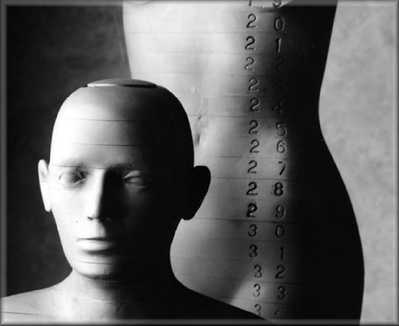

Rando Phantoms

| Stock # | Description | Please call for price | ||
|---|---|---|---|---|
| RAN100 | RANDO Man Phantom (includes camping base and permanent storage case) | |||
| RAN110 | RANDO Woman Phantom (includes camping base and permanent storage case) | |||
Comprehensive verification of the complete treatment planning sequence
The RANDO Phantoms provide the detailed mapping of dose distribution that is essential for evaluating radiotherapy treatment plans. There are two RANDO models, RANDO Man and RANDO Woman. Breast accessories are available for both models. Like the Sectional Phantoms, the RANDO Phantoms are constructed with a natural human skeleton cast inside material that is radiologically equivalent to soft tissue. The RANDO lungs are molded to fit the contours of the natural human rib cage. The lower-density material in the RANDO lungs is designed to simulate human lungs in a median respiratory state.
Designed for maximum flexibility, and maximum applications.
Dose measurements are obtained by using film or individual dosimeters. To facilitate dose mapping, RANDO Phantoms are sliced into 2.5cm sections. Optional hole grids are drilled through the phantom's soft tissue material provided that the holes do not pass through bone. These grids allow a variety of dosimeters to be used. The RANDO Phantoms are equipped with standard, close-fitting Mix D plugs inserted in the holes. However, The Phantom Laboratory can also provide optional Mix D plugs made to hold TLD chips, as well as, special Thermoluminescent Capsules for Lithium Fluoride Powders.
Soft Tissue - The RANDO Phantom's soft tissue is manufactured with a proprietary urethane formulation with an effective atomic number and mass density that closely simulates muscle tissue with randomly distributed fat. The material is virtually indestructible, capable of withstanding substantial impact and continuous handling without damage.
Lungs - The RANDO Phantom's lung material closely mimics the density of lungs in a median respiratory state. The molded lungs are handshaped and fitted to naturally fill the rib cage.
Skeletons - When possible, phantoms use natural human skeletons, skillfully reconstructed and adjusted to overcome any natural lack of symmetry, distorted joints, etc. and fit within the mold. Call to verify availability.
Breasts & Breast Cups - (optional) Breasts in sizes A through E are available for both female and male RANDO phantoms. Each breast is molded into 2cm thick sections and drilled on a 2cm grid to accept Mix D plugs.
RANDO Man is 5 ft. 9 in. tall and weighs approximately 125 lbs.
RANDO Woman is 5 ft. 4 in. tall and weighs approximately 118 lbs.
The RANDO Phantoms provide the detailed mapping of dose distribution that is essential for evaluating radiotherapy treatment plans. There are two RANDO models, RANDO Man and RANDO Woman. Breast accessories are available for both models. Like the Sectional Phantoms, the RANDO Phantoms are constructed with a natural human skeleton cast inside material that is radiologically equivalent to soft tissue. The RANDO lungs are molded to fit the contours of the natural human rib cage. The lower-density material in the RANDO lungs is designed to simulate human lungs in a median respiratory state.
Designed for maximum flexibility, and maximum applications.
Dose measurements are obtained by using film or individual dosimeters. To facilitate dose mapping, RANDO Phantoms are sliced into 2.5cm sections. Optional hole grids are drilled through the phantom's soft tissue material provided that the holes do not pass through bone. These grids allow a variety of dosimeters to be used. The RANDO Phantoms are equipped with standard, close-fitting Mix D plugs inserted in the holes. However, The Phantom Laboratory can also provide optional Mix D plugs made to hold TLD chips, as well as, special Thermoluminescent Capsules for Lithium Fluoride Powders.
Soft Tissue - The RANDO Phantom's soft tissue is manufactured with a proprietary urethane formulation with an effective atomic number and mass density that closely simulates muscle tissue with randomly distributed fat. The material is virtually indestructible, capable of withstanding substantial impact and continuous handling without damage.
Lungs - The RANDO Phantom's lung material closely mimics the density of lungs in a median respiratory state. The molded lungs are handshaped and fitted to naturally fill the rib cage.
Skeletons - When possible, phantoms use natural human skeletons, skillfully reconstructed and adjusted to overcome any natural lack of symmetry, distorted joints, etc. and fit within the mold. Call to verify availability.
Breasts & Breast Cups - (optional) Breasts in sizes A through E are available for both female and male RANDO phantoms. Each breast is molded into 2cm thick sections and drilled on a 2cm grid to accept Mix D plugs.
RANDO Man is 5 ft. 9 in. tall and weighs approximately 125 lbs.
RANDO Woman is 5 ft. 4 in. tall and weighs approximately 118 lbs.